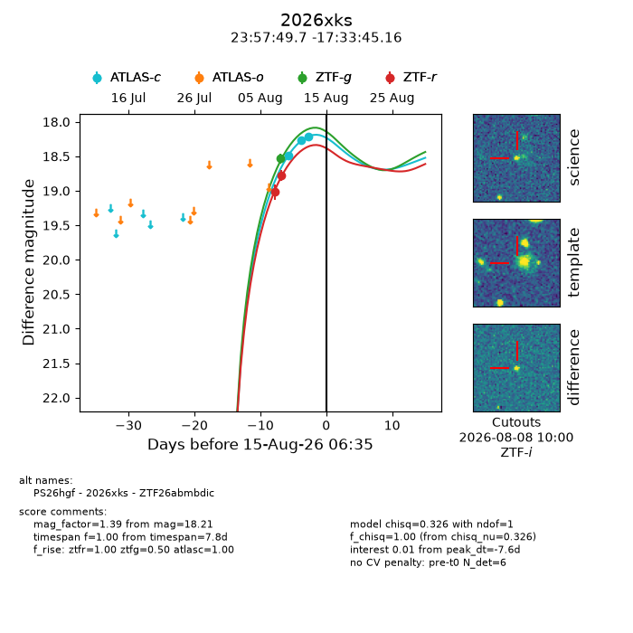
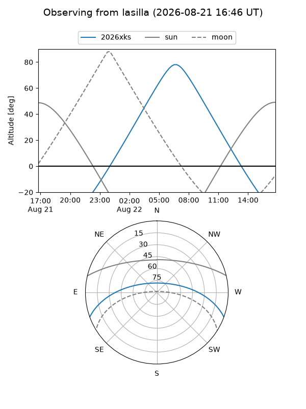
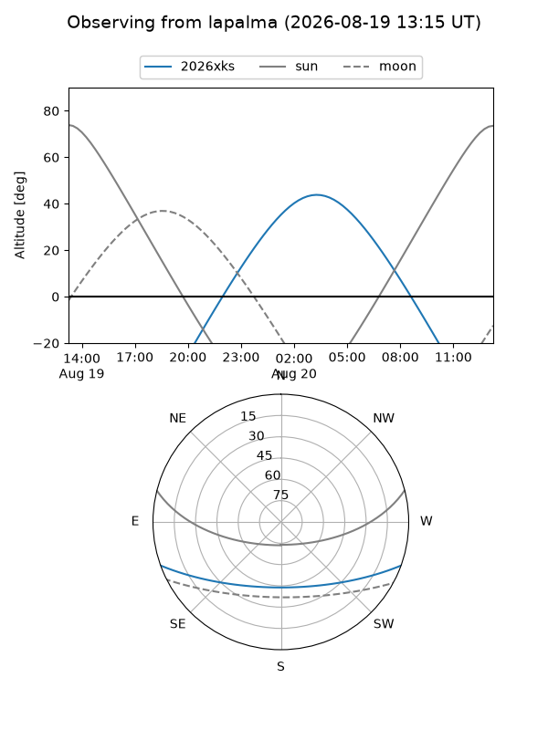
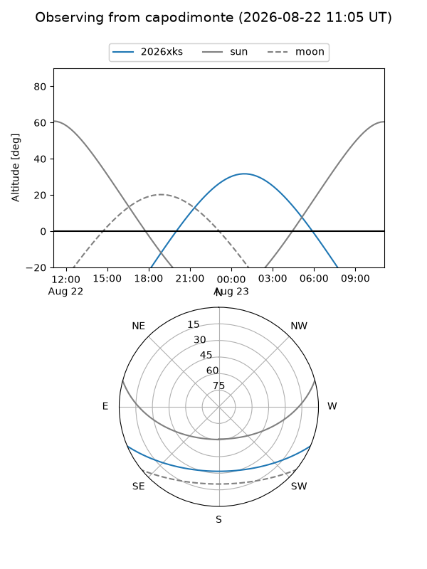
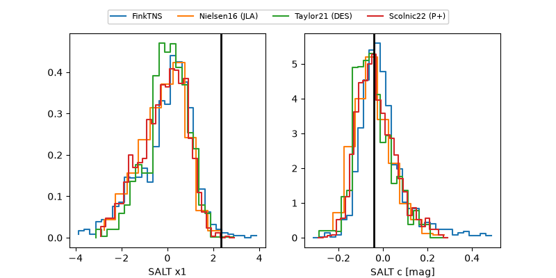

2026xks
Target 2026xks at 2026-08-15 06:38
Aliases and brokers:
FINK-ZTF: ztf.fink-portal.org/ZTF26abmbdic
Lasair-ZTF: lasair-ztf.lsst.ac.uk/objects/ZTF26abmbdic
ALeRCE-ZTF: alerce.online/object/ZTF26abmbdic
YSE-PZ: ziggy.ucolick.org/yse/transient_detail/2026xks
TNS name: wis-tns.org/object/2026xks
Direct TNS query: direct search
alt names
ZTF26abmbdic (ztf,fink_ztf)
2026xks (tns,yse)
PS26hgf (panstarrs)
Coordinates:
equatorial (ra, dec) = 359.4571,-17.56254
equatorial (HMS+DMS) = 23:57:49.71,-17:33:45.16
galactic (l, b) = (67.8632,-74.36282)
Flags:
TNS type: nan
peak dt: -7.6
Photometry:
last atlasc=18.21, ztfg=18.53, ztfr=18.78
3 atlasc, 1 ztfg, 2 ztfr detections
Lightcurve

Visibility



Additional plots
